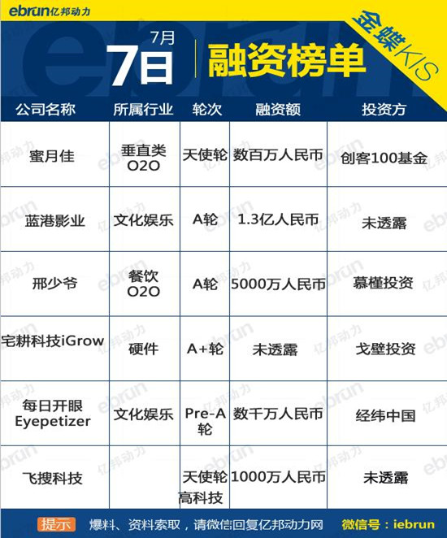

7月7日融资榜：又现O2O？邢少爷A轮获投5000万
来源: 亿邦动力网
获投企业和投资方介绍：
1. 蜜月佳：
业务介绍：蜜月佳是一个月子上门服务平台，有专业的医生、护士、通乳师、产修师、营养师，从医疗、护理、心理、餐饮等方面提供全方位的N对1服务。以移动医疗作为核心技术，致力于打造一个家庭医生的概念来专注于新生儿领域。近日，蜜月佳获数百万元天使轮融资，投资方为创客100基金。
投资方介绍：创客100基金成立于2015年11月，由《IT时代周刊》、创客100和中关村科技园区昌平园共同发起成立，首期募资6000万元人民币，专注于互联网领域的创新创业。
2. 蓝港影业：
业务介绍：蓝港影业（天津）有限公司是一个专注于网剧、动漫及影视作品的公司，目前已独家签约韩国漫画《雪姬》，通过游戏IP《苍穹之剑》推出网剧、动漫及影视作品，同时，获得了2015年中国电影票房冠军IP《捉妖记》及续集《捉妖记2》的手游改编权。近日，蓝港影业完成1.3亿元A轮融资。
3.邢少爷
业务介绍：邢少爷是一家主打各地特色爆款美食的餐饮O2O品牌，致力于打造自有品牌+入驻品牌的餐饮O2O平台。目前主要以秦镇米皮、老潼关为核心，做特色美食。近日，邢少爷获5000万A轮融资，资方为慕槿投资的倪惠霖。
4. 宅耕科技iGrow：
业务介绍：宅耕科技iGrow致力于打造一种家庭农业、都市宅耕的生活方式，产品是两款绿植室内智能种植机：针对儿童群体的绿植生长机，针对成年人的全自动植物生长机。近日，Grow宅耕科技获A+轮融资，由戈壁投资领投，诺亚财富旗下财富派跟投。
投资方介绍：戈壁合伙人是国内首家成立超过十年，并且专注于国内新兴创新领域的风险投资公司，其主要关注包括IT、TMT和数字媒体等多个产业。目前管理着总规模超过3亿美元的基金。
5. 每日开眼Eyepetizer：
业务介绍：开眼（Eyepetizer）是一个视频推介软件，帮助用户发现有趣的视频。通过每天推送五条精选短视频，帮助用户打理碎片时间。豌豆荚出品的一款短视频日报。近日，开眼获数千万元Pre-A轮融资，投资方为经纬中国。
投资方介绍：经纬中国2008年创立，总部设在北京，在环保技术、教育、能源、金融服务、健康、互联网和软件行业等不同领域积极寻找投资机会。
6. 飞搜科技：
业务介绍：飞搜科技是一家高科技公司，专注于面向企业研发人脸检测、人脸识别和图像识别等核心算法和应用，提供人脸校验、人脸属性分析、名人识别等服务。近日，飞搜科技获1000万元天使轮融资。